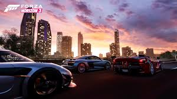
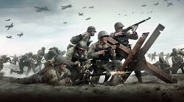

#Aktuell: Forza Horizon 3
Das neue Horizon baut auf denselben Prinzipien wie die beiden Vorgänger auf: die Fahrphysik der Forza Motorsport-Spiele in einer offenen Spielwelt voller vielfältiger Aufgaben und anderer Fahrer. Zentrale Anlaufstellen sind Festivals, die ihr mit der steigenden Anzahl an Fans nach und nach durch Erfolge in den Herausforderungen freischaltet und ausbaut. Ebenso werdet ihr mit Erfahrungspunkten und Credits belohnt; erstere sind für neue Aufgaben nötig, mit Credits erwerbt ihr Autos, Upgrades und Designs. Die Action steht im Fokus, daher ist die Fahrphysik der Motorsport-Reihe etwas entschärft - vor allem bei Fahrten abseits befestigter Straßen verhalten sich die Fahrzeuge angenehm gutmütig. Die Schwierigkeit lässt sich durch zuschaltbare Ideallinie, Fahrhilfen wie Traktionskontrolle, ABS und Stabilitätssystem, die Stärke der Gegner und das Schadenssystem an das eigene Können anpassen - hier werden Fun-Racer wie auch ambitionierte Fahrer glücklich, sofern letztere zugunsten des Fahrspaßes bei der Realitätstreue ein Auge drücken können.
#Last-Month: COD WW2
Ihr merkt: Wie jedes Jahr hat Activision ein Rundum-sorglos-Paket für alle Shooter-Enthusiasten unter uns zusammengeschnürt. Für die Entwicklung von CoD: WW2 zeichnet Sledgehammer Games verantwortlich, ein Studio, das seit Modern Warfare 3 an der Reihe mitarbeitet und vor drei Jahren mit Call of Duty: Advanced Warfare einen mehr als ordentlichen Reihenableger erstmals in Eigenverantwortung abgeliefert hat. Auch über die Qualität von Call of Duty WW2 kann man ähnliches sagen. Auf den ersten Blick scheint der aktuelle Ableger auf die bekannten stärken der Serie zu setzen und uns so eine Hollywood-artige, auf die Sekunde genau getaktete Kampagne zu bieten und mit seinen kurzweiligen Mehrspielergefechten für den Spielspaß jenseits der üblichen sieben Stunden des Singleplayer-Modus' zu sorgen.